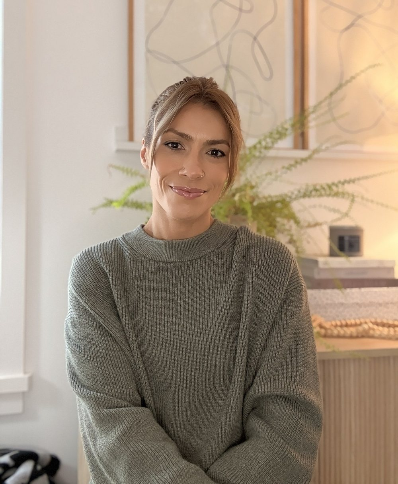
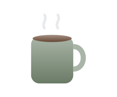
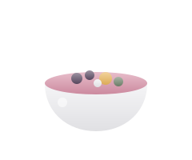

About me
Hi there, thanks for stopping by.
I’m Juliana, a Nutritionist who believes good nutrition has to work for both your body and your life.
Knowing what your body needs is only part of the picture. How you eat is also shaped by your routines, preferences, environment and what’s going on in your life. I pay attention to both.
The philosophy behind the work
The science may be universal. How it fits your life is personal.
Sound familiar?
Maybe you’ve
said one of these.
If any of that sounds like you, you’re exactly who I do this work for. We start with your real week, the busy days included, and find what fits.
“I know what I should eat. I can’t make it stick.”
“Every plan works for two weeks, then life gets in the way.”
“I’m tired of feeling like I’m doing it wrong.”
What I hope you’ll leave our first session feeling.

Listened to
We will talk about your days, your habits and the foods you love first.

Lighter
One or two things to try this week. Not a 20‑page plan.
Clear
You’ll know why each step matters, even when life gets busy.